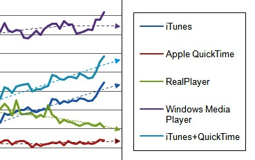

Al igual que sucede con las imágenes, el vídeo digital tiene unas características que definen su calidad: la resolución y la tasa de bits.
U10 - Información digital y Web
3.1. Características del vídeo
Actividad
La resolución de vídeo es la cantidad de píxeles que se obtiene al multiplicar el número de filas de píxeles por el de columnas.
| |
|
Img 28. PAL vs NTSC.
Imagen de producción propia. |
De esta definición se deduce que la resolución está íntimamente ligada
con la relación de aspecto. Por tanto, manteniendo constante una
relación de aspecto, la calidad de la imagen variará al aumentar o
disminuir la resolución, es decir, el número de píxeles, pudiéndose
producir el efecto pixelización.
Hay dos sistemas de codificación de vídeos, PAL Y NTSC (europeo y americano respectivamente), cuya resolución viene definida por el número de líneas activas que se utilizaban para la retransmisión televisiva.
Cada sistema reproduce el vídeo a un número de fotogramas o imágenes fijas por segundo (FPS). En PAL son 25 y en NTSC son 29,97.
Actividad
El tasa de bits o bit rate (BR) es el número de bits por segundo que se transmite. Se mide en bit/s o sus múltiplos Kbit/s y Mbit/s.
Esta velocidad puede ser constante (CBR) o variable (VBR).
En general, cuando hablamos de tasa de bits nos referimos al ancho de banda de la conexión entre los dispositivos digitales entre los que se realiza la transmisión.
- La tasa de bits constante (CBR) consiste en una transmisión uniforme, que cuantifica toda la señal por igual, sin tener en cuenta las características del vídeo transmitido.
- La tasa de bits variable (VBR) consiste en una transmisión variable, que cuantifica la señal en función de las zonas del vídeo transmitido. Así, si hay cambios significativos entre los fotogramas (mucho movimiento, fotogramas distintos), la cantidad de información trasmitida será distinta, utilizando más información en los fotogramas en los que sea necesario.
AV - Pregunta Verdadero-Falso
Seguro que pensabas que el vídeo digital era el formato DVD y te has encontrado con algunos conceptos nuevos que, tal vez, no habías oído nunca. Comprueba que los has entendido bien.
Retroalimentación
Verdadero
También se suele llamar relación o razón de aspecto.Retroalimentación
Falso
El número de píxeles determina la resolución del vídeo y, por tanto, su calidad.Retroalimentación
Verdadero
PAL y NTSC, respectivamente.Retroalimentación
Verdadero
Cuando hay poca variación en los fotogramas se usa la tasa CBR y para guardar y ver grandes archivos la tasa VBR.Retroalimentación
Falso
Los fotogramas están preestablecidos: en cine son 24, en PAL son 25 y en NTSC 29,97.| Formatos de archivo |
La compresión de los archivos de vídeo, con o sin pérdida de calidad, para reducir su tamaño determina los distintos formatos de archivo.
| .avi |
Es uno de los formatos más utilizados porque fue el primero que lanzó Windows. Sin comprimir ocupa mucho espacio, ya que el vídeo y el audio van en capas separadas. Puede comprimirse con los códecs (algoritmos de compresión) DV, DIVX, XVID. |
| .mov |
Es el formato originario de Macintosh, propiedad de Apple, reproducido mediante Quicktime Player. Se ha extendido debido a que el reproductor es multiplataforma. |
| .rv |
REALVIDEO (RV).- formato utilizado para la reproducción en tiempo real desde internet, es decir, streaming. Al igual que el audio, necesita un reproductor RealPlayer. Es propiedad de Real Networks. |
| .mpg | MPEG.- formato de vídeo con compresión con pérdida de calidad. Ha conseguido una calidad aceptable con relativamente poco peso eliminando fotogramas, puesto que el ojo humano no es capaz de captar todos los fotogramas por segundo que tiene un vídeo. Ha evolucionado desde MPEG-1 (para Vídeo CD) y MPG-2 (para Super VCD, DVD y HD) hasta MPEG-4 (.mp4) que convierte archivos DIVX en AVI. |
| .flv | FLASH VIDEO.- formato de vídeo de los archivos hechos con la aplicación Flash. Para reproducirse necesitan el Flash Player, pero su buena relación calidad-tamaño ha hecho que sea el formato de sitios como Youtube. |
| .wmv |
Es el formato de Microsoft que usa el reproductor Windows Media, aunque ya es compatible con otras plataformas como Mac. Al igual que el formato de audio, incluye la información relativa al autor y al copyright. |
Pre-conocimiento
|
El mercado del streaming es en la actualidad el elemento en expansión más importante en internet, por lo que la guerra entre los reproductores está servida.
El gráfico muestra la evolución y tendencia de los principales reproductores de vídeo y audio en tiempo real.
Como verás, aparece un nombre nuevo, iTunes, reproductor de Apple para sus Mac y sus iPhone y iPod, que además es multiplataforma.
Si estudias la lista, excepto Real Player, los demás están relacionados con Microsoft (Windows) o con Apple (Macintosh). ¿Te suena de algo esta guerra? |
 |
|
Img 29. Comparativa de reproductores streaming. Enero de 2009 Gráfico de Nielsen Online publicado en websiteoptimation.com |